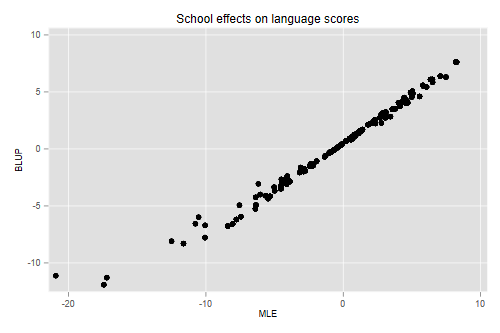
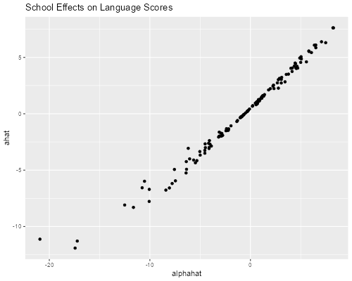

We illustrate basic ideas in variance-component models using data from Snijders and Boskers (1999). The dataset has 2287 children from 131 schools in The Netherlands, and is available in Stata format.
{% include srtabs.html %}. use https://grodri.github.io/datasets/snijders, clear (Scores in language test from Snijders and Bosker, 1999)
> library(haven)
> snijders <- read_dta("https://grodri.github.io/datasets/snijders.dta")
We are interested in scores in a language test. Here are some descriptive statistics:
. sum langpost
Variable │ Obs Mean Std. dev. Min Max
─────────────┼─────────────────────────────────────────────────────────
langpost │ 2,287 40.93485 9.003676 9 58
. scalar om = r(mean)
. bysort schoolnr: gen sn = _N // school n
. by schoolnr: gen first = _n == 1 // mark first obs in school
. sum sn if first
Variable │ Obs Mean Std. dev. Min Max
─────────────┼─────────────────────────────────────────────────────────
sn │ 131 17.45802 7.231618 4 35
> library(dplyr)
> options(pillar.sigfig=4)
> om <- summarize(snijders, m = mean(langpost)); om
# A tibble: 1 × 1
m
<dbl>
1 40.93
> sm <- group_by(snijders, schoolnr) |> summarize(n = n())
> summary(sm$n)
Min. 1st Qu. Median Mean 3rd Qu. Max.
4.00 11.50 17.00 17.46 23.00 35.00
The overall mean is 40.93. The number of observations per school ranges from 4 to 35, with an average of 17.46.
Next we fit a simple variance components model of the form \(Y_{ij} = \mu + a_i + e_{ij}\) using
schoolnr as the grouping factor:
. xtreg langpost, i(schoolnr) mle
Iteration 0: log likelihood = -8128.005
Iteration 1: log likelihood = -8126.6359
Iteration 2: log likelihood = -8126.6093
Iteration 3: log likelihood = -8126.6092
Random-effects ML regression Number of obs = 2,287
Group variable: schoolnr Number of groups = 131
Random effects u_i ~ Gaussian Obs per group:
min = 4
avg = 17.5
max = 35
Wald chi2(0) = 0.00
Log likelihood = -8126.6092 Prob > chi2 = .
─────────────┬────────────────────────────────────────────────────────────────
langpost │ Coefficient Std. err. z P>|z| [95% conf. interval]
─────────────┼────────────────────────────────────────────────────────────────
_cons │ 40.36409 .4271561 94.49 0.000 39.52688 41.2013
─────────────┼────────────────────────────────────────────────────────────────
/sigma_u │ 4.407781 .3516687 3.769711 5.153852
/sigma_e │ 8.035411 .1227603 7.798372 8.279656
rho │ .231302 .0292466 .1780689 .2924018
─────────────┴────────────────────────────────────────────────────────────────
LR test of sigma_u=0: chibar2(01) = 287.98 Prob >= chibar2 = 0.000
> library(lme4)
> vc <- lmer(langpost ~ 1 + (1 | schoolnr), data=snijders, REML = FALSE); vc
Linear mixed model fit by maximum likelihood ['lmerMod']
Formula: langpost ~ 1 + (1 | schoolnr)
Data: snijders
AIC BIC logLik deviance df.resid
16259.219 16276.424 -8126.609 16253.219 2284
Random effects:
Groups Name Std.Dev.
schoolnr (Intercept) 4.408
Residual 8.035
Number of obs: 2287, groups: schoolnr, 131
Fixed Effects:
(Intercept)
40.36
> v <- VarCorr(vc); v
Groups Name Std.Dev.
schoolnr (Intercept) 4.4078
Residual 8.0354
> s2u <- as.numeric(v)
> s2e <- sigma(vc)^2
> s2u/(s2u + s2e) # icc
[1] 0.2313022
We find an intraclass correlation of 0.23, so 23% of the variation in language scores can be attributed to the schools. (Alternative estimation methods will be discussed later, here we just used maximum likelihood estimation.)
Note that the estimate of the constant is not the same as the overall mean obtained at the outset. The overall mean can be seen as averaging the school means with weights proportional to the number of students per school, which would be optimal if the observations were independent. At the other extreme one could compute an unweighted average of the school means, which would be optimal if the intra-class correlation was one. Let’s compute these:
. egen sm = mean(langpost), by(schoolnr) // school mean . quietly sum sm [fw=sn] if first . di r(mean) 40.934849 . quietly sum sm if first . di r(mean) 40.129894
> schools <- group_by(snijders, schoolnr) |>
+ summarize(sn = n(), sm = mean(langpost))
> summarize(schools, mw = weighted.mean(sm, sn), mu = mean(sm))
# A tibble: 1 × 2
mw mu
<dbl> <dbl>
1 40.93 40.13
We obtain estimates of 40.93 weighted by school sample size and 40.13 unweighted. The random effects estimate represents a compromise between these extremes, and can be reproduced using weights inversely proportional to the variance of the school means:
. gen sw = 1/(_b[/sigma_u]^2+_b[/sigma_e]^2/sn) . quietly sum sm [aw=sw] if first . di r(mean) 40.364088
> schools2 <- mutate(schools, sw = 1/(s2u + s2e/sn))
> summarize(schools2, mle = weighted.mean(sm, sw))
# A tibble: 1 × 1
mle
<dbl>
1 40.36
We verify the estimate of 40.36.
Next we consider ‘estimation’ of the school random effects.
If these effects were treated as fixed, so the model is \(Y_{ij} = \mu + \alpha_i + e_{ij}\) we would estimate them by introducing a dummy variable for each school.
It turns out that the estimate of \(\mu\) is the overall mean, the estimate of \(\mu + \alpha_i\) is the school mean, and thus the estimate of \(\alpha_i\) is the difference between the school mean and the overall mean.
With random effects we consider the (posterior) distribution of \(a_i\) given the data $y_i (the vector with \(y_{ij}\) for \(j = 1, \ldots ,n_i\)). This can be obtained using Bayes theorem from the (prior) distribution of \(a_i\), the conditional distribution of the data \(y_i\) given \(a_i\), and the marginal distribution of the data.
The resulting estimate is known as BLUP (for best linear unbiased predictor) and can be shown to be the difference between the school mean and the m.l.e. of the constant “shrunk” towards zero by a factor
\[ R_i = \frac{\sigma^2_u}{\sigma^2_u + \sigma^2_e/n_i}, \]
the ratio of the variances of the random effect and the school mean. Note that shrinkage is minimal when (1) \(n_i\) is large, (2) \(\sigma^2_e\) is small (students are not informative), and/or (3) \(\sigma^2_u\) is large (schools are informative). Let us calculate these ‘by hand’
. gen R = _b[/sigma_u]^2/(_b[/sigma_u]^2 + _b[/sigma_e]^2/sn) . gen ahat = R*(sm-_b[_cons]) . gen alphahat = sm - om . scatter ahat alphahat, title(School effects on language scores) /// > xtitle(MLE) ytitle(BLUP) . graph export langblup.png, width(500) replace file langblup.png saved as PNG format

> library(ggplot2)
> schools3 <- mutate(schools2,
+ R = s2u/(s2u + s2e/sn),
+ ahat = R * (sm - fixef(vc)),
+ alphahat = sm - om$m)
> ggplot(schools3, aes(alphahat, ahat)) + geom_point() +
+ ggtitle("School Effects on Language Scores")
> ggsave("langblupr.png", width=500/72, height=400/72, dpi=72)

BLUPS can be computed more easily using xtmixed in Stata
or ranef() in R
. xtmixed langpost || schoolnr: , mle
Performing EM optimization:
Performing gradient-based optimization:
Iteration 0: log likelihood = -8126.6092
Iteration 1: log likelihood = -8126.6092
Computing standard errors:
Mixed-effects ML regression Number of obs = 2,287
Group variable: schoolnr Number of groups = 131
Obs per group:
min = 4
avg = 17.5
max = 35
Wald chi2(0) = .
Log likelihood = -8126.6092 Prob > chi2 = .
─────────────┬────────────────────────────────────────────────────────────────
langpost │ Coefficient Std. err. z P>|z| [95% conf. interval]
─────────────┼────────────────────────────────────────────────────────────────
_cons │ 40.36409 .4263628 94.67 0.000 39.52843 41.19974
─────────────┴────────────────────────────────────────────────────────────────
─────────────────────────────┬────────────────────────────────────────────────
Random-effects parameters │ Estimate Std. err. [95% conf. interval]
─────────────────────────────┼────────────────────────────────────────────────
schoolnr: Identity │
sd(_cons) │ 4.407783 .3516692 3.769713 5.153856
─────────────────────────────┼────────────────────────────────────────────────
sd(Residual) │ 8.035411 .1227603 7.798372 8.279655
─────────────────────────────┴────────────────────────────────────────────────
LR test vs. linear model: chibar2(01) = 287.98 Prob >= chibar2 = 0.0000
. predict ahat2, reffects
. list schoolnr ahat ahat2 if first & schoolnr < 16
┌──────────────────────────────────┐
│ schoolnr ahat ahat2 │
├──────────────────────────────────┤
1. │ 1 -3.498956 -3.498958 │
26. │ 2 -11.2898 -11.28981 │
33. │ 10 -5.985623 -5.985626 │
38. │ 12 -7.77485 -7.774852 │
53. │ 15 -6.704085 -6.704087 │
└──────────────────────────────────┘
> eb <- ranef(vc) > cbind(head(eb$schoolnr), head(schools3$ahat)) (Intercept) head(schools3$ahat) 1 -3.4989576 -3.4989576 2 -11.2898065 -11.2898065 10 -5.9856240 -5.9856240 12 -7.7748515 -7.7748515 15 -6.7040857 -6.7040857 16 0.8025273 0.8025273
We list a few cases to show that the two calculations yield the same result.